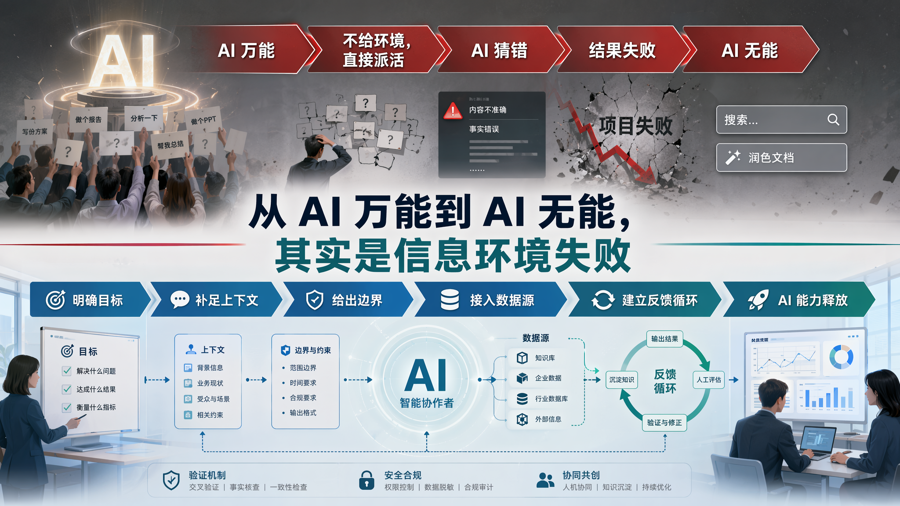

同一个 AI 模型，为什么在编程领域一气呵成，在商业决策领域举步维艰？核心差别不在于 AI 的智力，而在于它"活"在什么样的信息环境里。
神话 AI 与轻视 AI 是同一误区的两面——既高估了 AI 在信息真空中的能力，又低估了 AI 在良好信息环境中的能力。
很多人使用 AI 的过程，本质上是在两个极端之间反复横跳。
第一个极端是神话 AI：觉得 AI 已经无所不能，于是用极其抽象的一句话丢给它直接执行——「给我实现一个微信」「帮我做一下投放分析」——没有验收标准、没有边界条件、没有环境信息，默认 AI 能自己猜到真实需求。
第二个极端是轻视 AI：一旦结果不理想，就迅速退回"AI 不靠谱"的判断，把关键决策和执行过程全部收回到人手里，只让 AI 做搜索、润色、整理这类边角料。
这两个极端看似相反，其实是同一个误区的两面：既高估了 AI 在信息真空中的能力，又低估了 AI 在良好信息环境中的能力。
真正的问题不是 AI 万能，也不是 AI 无能。问题在于：我们没有给 AI 提供足够解决问题的环境，却要求它直接面对任务；等它交付不好，又把问题归因于模型能力不足。
2026 年 6 月，AI 工程圈被两句话同时点燃。Anthropic Claude Code 负责人 Boris Cherny 说：「你不应该再提示编码 Agent 了。你应该设计循环来提示你的 Agent。」 几乎同时，Harness Engineering 的概念刷屏技术社区。这两股声浪指向同一个方向——AI 工程范式在一年半内完成了四次跃迁：
2023-2024 年：Prompt Engineering —— 「你怎么把指令说清楚」。
2025 年：Context Engineering —— 「你给 AI 构建什么样的信息环境」。
2026 年初：Harness Engineering —— 「你给 Agent 套上什么样的缰绳」。
2026 年中：Loop Engineering —— 「你设计什么样的循环来驱动 Agent」。
这四次跃迁不是在讲技术名词的更替。它们在讲同一件事——每一次「进化」，本质上都是一次权力让渡：人类把越来越多的决策权，从自己手里交出去，交给系统。
| 年份 | 范式 | 让渡了什么 | 人还保留什么 |
|---|---|---|---|
| 2023-2024 | Prompt Engineering | 「怎么写」 | 人设计提示词措辞和模板——AI 是执行工具，权力主体仍在人手里 |
| 2025 | Context Engineering | 「信息获取方式」 | 人不再每次手动喂信息，而是构建文档、知识库、检索系统——AI 自主探索和理解上下文 |
| 2026 初 | Harness Engineering | 「执行环境的控制权」 | 人不再每轮手动控制 Agent，而是设计护栏、约束、反馈循环——Agent 在规则内自主运行 |
| 2026 中 | Loop Engineering | 「任务流转的决策权」 | 人只定义目标和停止条件，Loop 自动发现→计划→执行→验证→迭代——人在循环之外掌舵 |
这条弧线在编程领域跑得飞快——2026 年 Claude Code、Codex 已在工程团队里大规模落地，OpenAI Codex 靠 3 人团队 5 个月产出 100 万行代码、合并 1500 个 PR，LangChain 仅优化 Harness 层就让 Terminal Bench 得分从 52.8% 跃升至 66.5%。但这里有一个令人不安的问题：
代码库天生就是一个包含解决问题所需大部分信息的环境——这是 AI 在编程领域势如破竹的根本原因。
一个 Agent 要改订单模块的防超卖逻辑——它 grep "order"，读 4-5 个文件，跑一遍测试，大概率就搞清楚上下文了。编程领域的信息环境有几个独特属性：
import / require / go.mod——外部依赖显式声明，链路完整。| 维度 | 编程领域 | 商业决策 / 广告策划 |
|---|---|---|
| 核心信息在哪 | 代码仓库（结构化文本） | 人的经验、口头传达、散落文档 |
| 信息密度 | 极高——每个文件都是精确的机器指令 | 极低——关键信息在"老张知道"里 |
| 可验证性 | 编译通过 / 测试通过 = 机器可判 | 决策好坏可能要数月后才见分晓 |
| 反馈速度 | 秒级 | 周或月级别 |
| 信息编码形式 | 统一语法、统一仓库 | Word + Excel + 微信 + 口述 + 会议纪要 |
编程领域的信息环境：一个模型能靠工具自主探索、逐步逼近真相的封闭宇宙。 商业领域的信息环境：一个模型连"真相在哪"都不知道的开放荒漠。
任何 AI 应用场景，信息都可以按"AI 知道多少"分为三层：
编程通识、语言语法、主流框架、设计模式、网络协议。AI 在这里是顶级专家。
代码本身就是结构化的领域共识，Git 历史是决策记录，架构分层是项目契约。AI 进入一个代码库，不是从零开始——它有一座图书馆。
本次任务的改动范围、验收标准、上下游影响、限制条件。需要每次补给它。
同一个模型，不同的信息环境 = 天壤之别的表现。给 AI 一个好环境，它就能交付好结果；给 AI 一个烂环境，再强的模型也救不回来。
编程领域有一个反复出现的场景：同一个项目，同一套 Claude Code，同一个工程师——有时改一行代码一气呵成，有时反而把不相干的模块全改了。差别在哪？不是模型变聪明或变笨了，而是这一次它看到了正确的信息结构，那一次它在信息真空中猜测。
串联这条链路有两大故障点：编码不足（信息没说清）和 信道过载（有效信号被淹没）。优秀的 AI 协作 = 信息编码优化 + 信道管理。
Fable 团队有一个很好的说法：地图不是疆域。 你给 AI 的提示词、上下文、Skill、参考资料，是"地图"；真正要工作的代码库、业务现场、组织约束、用户偏好，是"疆域"。地图和疆域之间的差距，就是 AI 会遇到的未知项。大多数失败，都发生在 AI 猜错了，而人类甚至没有意识到它正在猜。
| 类型 | 含义 | AI 协作里的表现 | 处理方式 |
|---|---|---|---|
| 已知的已知 | 你已经明确写出来的信息 | 目标、文件、数据源、验收标准清楚 | 直接执行 |
| 已知的未知 | 你知道自己还没想清楚的部分 | 方案 A/B 不确定、指标口径待定、边界条件未确认 | 让 AI 反问、调研、列决策点 |
| 未知的已知 | 你平时不会写，但看到就能判断的隐性标准 | 审美、业务手感、"这个不像我们团队的写法" | 原型、多方案、参考样例 |
| 未知的未知 | 你完全没意识到的坑 | 历史约束、隐藏依赖、老系统例外、真实用户行为 | Blindspot pass、探索、实现笔记 |
这张表把"信息环境"从抽象概念变成了诊断工具。下次 AI 做错，不要只问"是不是模型不行"，而要先问：它到底在哪个未知项上被迫猜了？
后训练的本质很大程度上是在让模型熟悉环境。类比：老员工的价值来自口口相传的环境信息——哪个系统容易在月底崩溃、哪个客户有特殊偏好、上次事故的真实原因。这些信息不在任何文档里，在人的脑子里。环境信息的积累，才是人与人在同一个组织里拉开差距的核心变量。
模型也一样。一个经过领域后训练的模型，不是在"变聪明"，而是在"变熟悉"——它对这个环境的信息结构越来越了解，不需要每次都从零推导。
工程师说："给订单模块加防超卖的锁，参考库存那边的写法。"——15 个字，极度抽象。Agent 从信息环境中做了四步：grep 找到参考实现 → grep 找到目标函数 → 读 CONTEXT.md 确认领域术语 → 读 AGENTS.md 确认边界。最终落地到 LLM 的指令变成了 100+ 个字——信息完备、边界清晰、可验证。
编程领域的飞轮已经在转了：GitHub Copilot 有全球最大的代码库交互数据，Claude Code 有 Auto Memory，Cursor 有隐式反馈。但商业领域呢？飞轮还没真正启动。谁先抢占用户在实际工作环境中的使用，谁就更有机会成为商业 AI 领域的赢家。这不是模型能力的竞争，是谁先建起信息环境的竞争。
这些不是"编程专属"的技巧，而是任何需要为 AI 构建信息环境的领域都能复用的通用范式。
"信息不够？我自己去找。"
"信息不全？直接报错。"
对话开始塞入核心上下文——任务 Brief + 2-3 个关键数据源 + 明确边界。锁定方向。
只说目标，让 Agent 自己搜索文件、查询数据库、读取文档。适合问题定位不明确。
通过 MCP 等接口，AI 需要时自己拉取——API 文档、数据库 Schema。不预占上下文窗口。
混合策略实战：前期 Push 定方向 → 中期 Agent 在安全半径内自主探索 → 后期按需 Pull 补细节。
减少 AI 猜测的次数，就是提升产出质量。以下五种技术，把信息发现的责任从人类转移到了 AI 身上：
| 技术 | 核心做法 | 一句话指令 |
|---|---|---|
| ① Blindspot Pass | 任务开始前让 AI 扫描人类的盲点——"我知道什么、不知道什么、哪些假设需要确认" | "在开始执行之前，先列出你对这个任务的已知信息、未知信息和需要我确认的假设。" |
| ② 反问采访 | AI 主动提问，一次一个问题，优先问会改变方案的高杠杆问题 | "在开始之前，先问我最多 5 个问题，优先问那些如果答案不同会影响整体方案的问题。" |
| ③ 实现计划审阅 | 写代码前先暴露数据模型、类型接口、UX 流程给人审阅 | "先列出实现计划，重点展示数据模型、类型接口、UX 流程和验收标准。等我确认。" |
| ④ 实现笔记 | 维护 IMPLEMENTATION_NOTES.md，记录边界情况和决策偏离 |
"在任务目录下维护 IMPLEMENTATION_NOTES.md，遇到边界情况、偏离计划时追加一行。" |
| ⑤ 测验模式 | AI 生成 3-5 道题反过来考人，验证人是否真正理解变更 | "生成 5 道选择题，考察我是否理解你这次的变更。覆盖核心逻辑、边界条件、回滚方案。" |
"帮我做一下这个季度的广告投放分析" vs "基于 Q2 的投放数据（见 data/Q2-ads.csv），按 ROAS > 2.0 筛选渠道，对比去年同期，输出一页 PPT 摘要"——天壤之别。
| 抽象级别 | 类比 | 商业场景对应 | AI 能交付吗？ |
|---|---|---|---|
| 泛指 | "帮我带只狗回来" | "做一下投放分析" | ❌ 交付随机结果 |
| 品种具体 | "带一只金毛回来" | "分析 Q2 各渠道 ROAS" | ⚠️ 方向对了细节不对 |
| 个体具体 | "带邻居家叫 Lucky 的金毛" | "基于 data/Q2-ads.csv，ROAS > 2.0 的渠道，对比去年同期，输出一页 PPT" | ✅ 交付你想要的 |
Superpowers 的 14 个 Skill 本质上在做同一件事：把信息注入 AI 的过程工程化——在正确的时间、以正确的粒度、用正确的强制力，把正确的信息塞进 AI 的上下文。
把隐性纪律变成显性信息。Skill 编码了工程纪律——在 AI 产生「改一下试试」的念头之前就切断了退路。
预判 AI 的借口（「太简单不需要测试」），提前写好反驳——堵死 AI 因信息缺失而走捷径的路径。
信息按阶段触发——Frontmatter（触发条件）→ 正文（核心指令）→ 附属文件（按需引用）。
Skill 做的事，用信息环境的语言说就是：把「老张脑子里的经验」搬到磁盘上，让 AI 每次都能读到。
模型越来越强，Skill 的价值会发生什么变化？答案取决于 Skill 编码的是哪一层信息：
| 信息层 | Skill 编码的内容 | 模型进化后的变化 |
|---|---|---|
| 第一层 · 世界知识 | 通用方法论、流程模板、工程纪律（如 TDD 步骤、调试流程） | 会过时——模型已内化这些知识，甚至学到了更优版本，旧 Skill 变成紧身衣 |
| 第二层 · 领域共识 | 团队约定、架构规范、决策边界、历史原因 | 永久留存——组织私有信息，不在任何公开训练数据里，模型永远接触不到 |
| 第三层 · 当前需求 | 按任务注入的具体约束、验收标准、数据范围 | 每次重建——不是 Skill 的职责，而是信息环境通过上下文管理的按需注入 |
这意味着 Skill 工程的正确节奏不是「积累 → 积累 → 积累」，而是「积累 → 裁剪 → 积累 → 裁剪」——每次模型代际升级，第一层 Skill 需要审计和删减，第二层 Skill 需要保留。
AI 不是全知全能的代码生成器，而是"能力很强但第一天入职的新员工"。
| 新员工入职需要什么 | 映射到 AI 协作 | 工程实现 |
|---|---|---|
| 入职资料包 | 补齐领域共识层 | 业务术语表 + 决策边界文档 |
| 一张干净的工位和电脑 | 独立的执行环境 | 独立会话 + 独立数据视图 |
| 师傅告诉 TA"从哪开始、哪些不能动" | 三段式指令 | 目标 + 起点 + 边界 |
| 师傅的工位旁边可以随时问 | 对话式交互 | Agent 模式的思考-行动循环 |
| 公司的工作 SOP | 标准化 AI 协作流程 | Skill 系统 |
| 犯错后师傅指正 | Review + 反馈 + 更新约束文档 | 每次 AI 偏差 → 更新环境文档 |
AI Agent 在信息环境完备的前提下自主运转——自动发现→计划→执行→验证→迭代。Loop 不是在真空中运转的，它每个阶段都依赖特定的信息层提供输入：
| 阶段 | 依赖的信息层 | 信息从哪里来 |
|---|---|---|
| Discover（发现） | 第三层：当前需求 | CI 日志、Issue 系统、数据告警——自动化触发源喂给 Agent |
| Plan（计划） | 第二层：领域共识 | 环境文档（CONTEXT.md、ADR）、Skills 系统——Agent 从信息环境拉取规范和决策历史 |
| Execute（执行） | 第一层 + 第二层 | 世界知识（模型内置）+ Connectors 实时拉取精准数据 |
| Verify（验证） | 独立信息视角 | 第二个 Agent 独立审查——不同的上下文窗口，不受实现过程的上下文污染 |
| Iterate（迭代） | 信息持久化 | 每次迭代结果写入 STATE.md 等外部存储——下一轮循环从持久化状态中读取 |
Loop 的自主性，本质上是信息环境的完整性。编程领域已经在跑：Claude Code 的 15 字意图驱动 5 阶段 Loop、Oh My Pi 的 CI 失败日志自动触发修复、OpenAI Codex 的 3 人团队 1500 个 PR。商业领域的差距，本质上是"信息从哪里来"那一列的空白——不是缺少 Loop 引擎，而是缺少 Loop 的燃料：信息环境。
谁能在用户的实际工作环境中先建起一套可自我强化的信息环境，谁就拥有下一代 AI 应用的护城河。
前面四章建立了一条清晰的逻辑链：AI 的能力上限取决于信息环境，信息环境的核心是第二层（领域共识）和第三层（当前需求）。谁先抢占用户在实际工作环境中的使用，谁就更有机会成为商业 AI 领域的赢家。
但商业领域的信息散布在人的经验、散落文档、口头传达里，缺乏统一的信息载体。这恰恰是一个结构性的机会窗口：谁能先构建起商业领域的信息环境，谁就能复制编程领域的成功。
WorkBuddy 嵌在操作系统层面，天然处于用户实际工作信息的交汇点。三个层级的信息，在 WorkBuddy 中都有自然的沉淀路径：
| 层级 | 信息类型 | 在 WorkBuddy 中的自然积累 |
|---|---|---|
| 个人层 | 用户偏好、工作习惯、常用工具 | 打开哪些应用、常用哪些数据源、如何组织工作流程——每一次操作都是隐式信息 |
| 团队层 | 项目约定、领域术语、历史决策 | 文档、会议记录、审批流、沟通记录——在操作系统中流转，不需额外迁移数据 |
| 组织层 | 业务规则、合规边界、跨部门流程 | 公司级应用权限、预算审批规则、品牌规范——天然存在于企业操作环境中 |
与纯 SaaS 工具的根本区别：SaaS 工具只能看到用户主动输入的信息，WorkBuddy 能看到用户在真实工作中的完整行为轨迹。编程 Agent 永远接触不到的信息维度——文档、会议、审批、通讯——恰恰是商业决策最需要的信息环境。
更大的机会在于——在每一次任务执行的过程中，把原本流失的隐性信息捕获并结构化。每一次商业决策、广告投放分析、运营优化，都伴随着大量有价值的信息——决策背景、执行过程、效果反馈、隐性经验。在传统商业协作中，这些信息绝大多数流失了。
WorkBuddy 作为操作系统层面的 AI 平台，可以在执行任务的同时，按既定规则将这些信息结构化地写入可重复读取的环境：
| 任务阶段 | 产生的信息 | 自动沉淀方式 |
|---|---|---|
| 方案阶段 | 为什么选这个方案、排除了哪些选项、权衡了什么 | 自动记录决策背景与推理过程，存入团队的决策历史 |
| 执行阶段 | 实际步骤、边界情况、异常处理、临时偏离 | 自动生成执行笔记，标记与计划的偏离点及其原因 |
| 验证阶段 | 实际效果数据、与预期的差距、意外发现 | 将验证结果关联到原始决策，形成"决策 → 效果"的可追溯链路 |
| 复盘阶段 | 本次踩坑、可复用的经验、应更新的规则 | 将经验提炼为团队规则，更新到环境文档或 Skills 中 |
从现在开始，为 AI 构建信息环境。
| 阶段 | 行动 | 编程领域对应 | 商业领域对应 |
|---|---|---|---|
| 第 1 周 | 建立基础信息文档 | AGENTS.md + CONTEXT.md | 业务术语表 + 决策边界文档 |
| 第 2 周 | 规范指令格式 | 三段式指令（目标+起点+边界+验收） | 任务 Brief（范围+约束+数据源+验收标准） |
| 第 3 周 | 隔离执行环境 | Git Worktree + 独立会话 | 独立会话 + 独立数据视图 |
| 第 4 周 | 建立纠偏闭环 | Review → 写进 AGENTS.md | 每次 AI 偏差 → 更新约束文档 / Skill |
| 持续 | 沉淀可复用知识 | Skills 系统 | 把高频任务模式编码为可复用 Skill |
| 持续 | 接入外部信息源 | MCP Connectors | 数据库、API、消息系统接入 |
| 持续 | 探索自动化 | Loop（定时 + 目标条件） | 定期报告生成、异常检测、趋势分析自动运行 |
组织级信息环境需要长期建设，但每一次具体任务，也可以用一套轻量流程降低 AI 被迫猜测的概率：
| 阶段 | 目标 | 做法 | 产物 |
|---|---|---|---|
| 实现前 | 暴露未知项 | 让 AI 做 blindspot pass；让 AI 一次问一个会改变方案的问题 | 决策点清单 |
| 实现前 | 表达隐性标准 | 用原型、多方案、参考资料让人先反馈 | 原型 / 参考样例 |
| 实现前 | 锁定执行边界 | 让 AI 写实现计划，列出数据模型、接口、验收标准 | 实现计划 |
| 实现中 | 记录环境发现 | 要求 AI 维护实现笔记，记录边界情况、偏离、保守选择 | implementation-notes.md |
| 实现后 | 确认人真的理解 | 让 AI 生成解释文档、验收清单，反向测验人 | 解释文档 / 验收记录 |
| 实现后 | 反哺信息环境 | 把本次踩坑、团队约定、验证方法沉淀回环境文档或 Skill | 更新后的规则 |
这套流程的核心不是让任务变慢，而是把昂贵的返工前移——越早发现地图和疆域不一致，后面修正的成本越低。
| 反模式 | 修正方案 |
|---|---|
| 一次性塞入大量数据（让 AI 在海量信息中迷失） | 只给核心上下文，AI 需要更多自己探索 |
| 一个会话混做多个任务（旧任务信息占着上下文） | 不同任务开不同会话，一条会话一条事 |
| 期待 AI"自己悟"（需求停留在模糊层次） | 假设 AI 什么都不懂，每次需要它懂什么就说清楚 |
| 超长 Prompt 模板（几百行模板吃掉窗口） | 长期规则放外部文档，对话中只写本次直接相关的 |
| 信息环境建完就不再维护 | 每次 AI 犯错 = 一次信息环境升级的机会 |
| 只看模型选型，不看环境建设（"换更强模型就行"） | 模型是发动机，环境是赛道——烂赛道上什么发动机都跑不快 |
